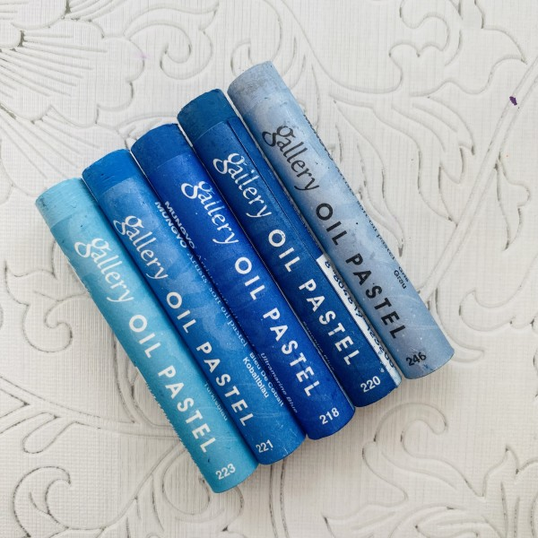

Our Services

Oil pastel
Oil pastels can be used to produce dramatic drawings with vibrant colours and lots of texture. They're convenient to use and can be used to capture an image in a very short period of time.

Graphite Pencil
Graphite drawing is, essentially, drawing with graphite pencils rather than colored pencils. Blending is usually done with an eraser or a stump to blur individual lines and create gradations.
Pencil Colour
Colour pencils are those that are made of wax, pigments, additives and binding agents. Some colour pencils are wax. Wax: Pigments are bound together with wax to create hard or soft pencil cores.